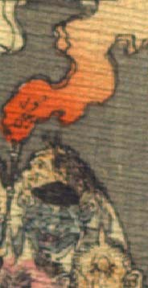

青い肌の鬼。頭に黒い頭巾状のものをかぶっている。獣のような耳が目よりも上についている。目は小さく、口は横に裂けている。白い上着を身に着け、右手で松明を掲げている。
著作者：J.Dautremer／出典：親書誌：U426_nichibunken_0123：Le vieillard et les démons／日付：2006／資源識別子：U426_nichibunken_0123_0001_0007
Copyright (c)2010- International Research Center for Japanese Studies, Kyoto, Japan. All rights reserved.